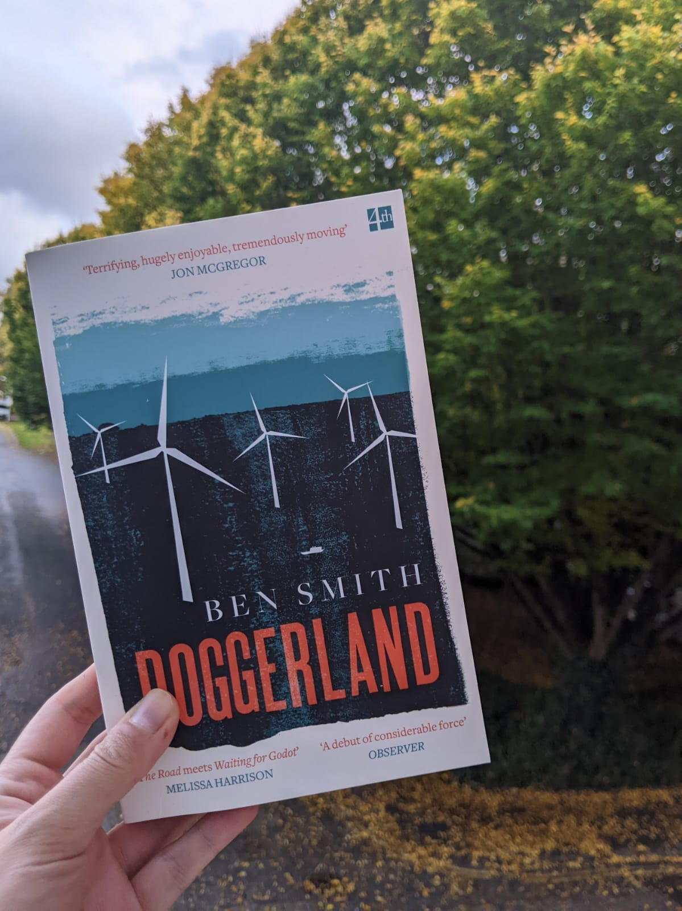
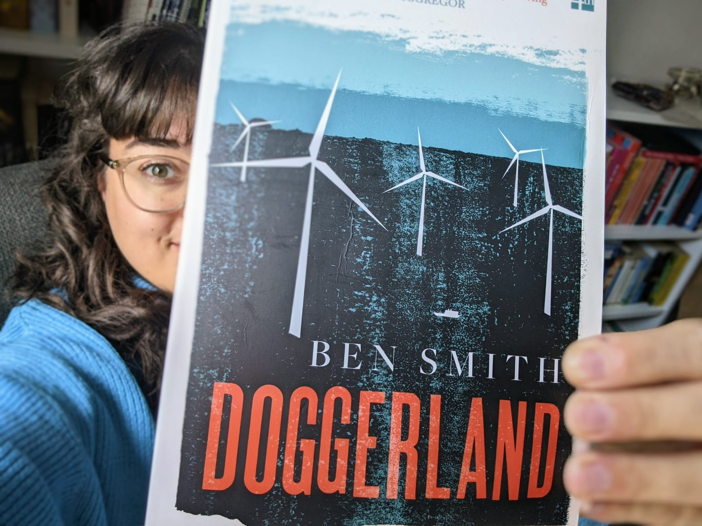

Doggerland
by Ben Smith
Doggerland is an exemplary novel of climate fiction that isn't: you don't open it and bake in guilt and melancholy as you would with Ministry for Future by Kim Stanley Robinson, or even A Children's Bible by Lydia Millet. Doggerland is instead immediately intimate, reeling you in carefully and gently. The front cover boasts a review from Melissa Harrison, declaring it: "The Road meets Waiting for Godot", and that, more than anything feels the best possible description for Doggerland. Time, here, is a character as much as it is in Waiting for Godot: hours are days and minutes are weeks, with taunting views to the past that delicately unfold how unrelentingly miniscule our main characters are. The Road finds a mirror here, too, in the stark, utilitarian language that reflects the Doggerland landscape more than long-winded, rambling descriptions could bring to the novel. Hints of violence and unease are crafted similarly to McCarthy’s uncanny ability to keep you reading on, hoping for resolution.

Doggerland's Boy begins a quest to find out what happens to his father, who has abandoned him on the windfarm rigs with the Old Man. The only occasional other company: the pilot, a Pozzo controlled by his alcoholic, capitalistic tendencies Lucky (for those of you who have already read Godot), who is their only connection to the mainland, the only person able to bring sustenance and gift in equal measure.
But Doggerland is multi-layered, more satisfyingly coloured than The Road or Godot, with less barren landscape and more symbolism. There is the plot, then the statements on climate change, on capitalism, on what it takes to be recorded in history and what stories that conveys to the next generation. None of these themes are there to take away from what is, at its core, a compelling page-turner. Instead, they are added on as deeply satisfying, rich layers that strengthen the senses of violence at the edges of the story. A prime example is the pilot--intriguingly eerie and vaguely odious, not merely because of his pathetic, somnolent propensity towards drink; but because he functions so entirely as an arm of capitalistic greed. The anticipation of how this Charon reacts towards Boy and Old Man, what is he willing to trade for with them, builds suspense and tension effortlessly. Another swipe at capitalism: the corporation as a nameless, faceless, ever-evolving monolith. It is so sufficiently depersonalised even when the Boy reaches the very heart of it, that its empty façade is an indictment more sufficient than any number of critical editorials could be.

Flashbacks into the past are artfully rendered, reminding you of what it takes to be seen by history--more hints of flagrant violence as you realise that Doggerland's past (the height of Mesolithic culture at that time, not merely a transitory bridge between cultures) is cyclical. The tragedy of Doggerland as our future is compounded by the fact that, unlike those humans who endured a mythical, uncontrollable Flood, we had a choice, a choice which we continue to make, a choice which even the most recent COP-27 seems to not have been able to stop. Those humans left behind: tools of their trade, parts of beloved settlements. We have left behind: relentless one-time use Coke bottles, discarded remnants of capitalistic flotsam.
The forces of physics and biology and chemistry will carry on regardless of what we leave behind--winds will carry on, albeit with altered trajectories and intensities; bacteria will multiply and abound; the smallest and the most resilient of creatures will find a way to enmesh themselves within changing landscapes. But which boat will we be living on? Doggerland makes these choices clear, rendering these long timescales and immutable forces relatable, effortlessly and fragrantly alive in a way that other climate fiction novels haven't been able to do without belabouring apocalyptic scenarios that render them dystopic. There are, undoubtedly, dystopic futures in front and ahead of us--but Doggerland shows us the very unglamorous "get on with it" scenarios that many of us will be forced into, and questions of us: is this worth it?
Read this and enjoyed it? Let me know! This post’s recommendations will be held back as we’ll be revisiting Doggerland soon with an interview with the author…